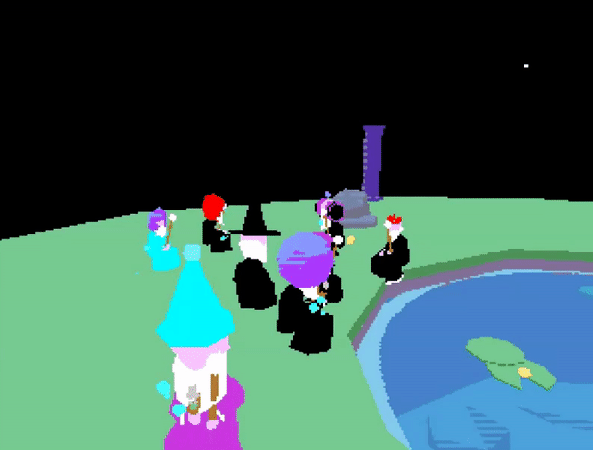

WIZMUD
An abandoned MUD (Multi User Dimension), unearthed by hackers in the year 2017 where you play as a wizard in a once lively MMO world. The new tenants of WizMud have taken to tossing priceless artifacts (old junk) from this forgotten MMO into the fishing pond, along with its conventions.
ABOUT
WizMud is an online chat and event space where people play as wizards and can interact with each other in unique ways via emotes, spells, potions etc. Potential activities include watching youtube videos in "Mod Zone" with your pals, admiring the beautiful fan art in the museum and soft roleplaying by the pond. Currently in alpha stage of development, made using Unity 3D.
CREDITS
I create all art assets, 3D models, effects, animations and more
Manny Momot - Programming
David Califf - Programming
Tristan Whitehill (Euglossine) - Sound Design
Halloween event 2017
Some wizmud funny guys